用 Hermes Agent 下载研究文献 从安装到批量归档的图文教程
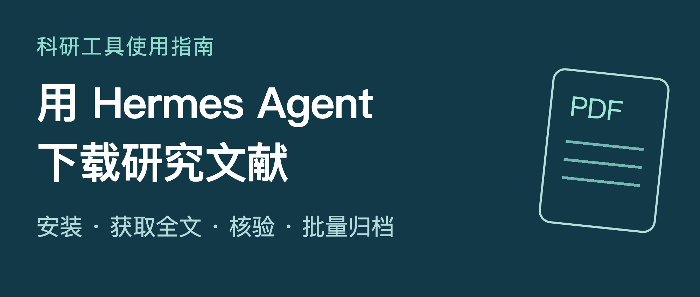
找到了论文题名，接下来往往还有一串工作：核对是不是要找的那篇，打开全文入口，保存 PDF，改文件名，再把来源和版本记下来。
几篇论文可以手动整理；几十篇论文一起处理时，最容易出问题的往往是最后几步。下载文件夹里多了几个 PDF，却说不清它们对应哪条文献、从哪里取得、是不是正式发表版。
Hermes Agent 可以把检索、获取、核验和归档连接起来。使用时，把任务和验收标准一起交给它，结果会更容易检查。
这篇教程以 Nous Research 的 Hermes Agent 为例，先完成一篇公开论文的下载，再练习医学文献和清单处理。每一步都写明在哪里输入、具体怎么做、完成后检查什么。正文提示词可以整段复制。
适用范围：本机命令行入门；已使用桌面端的读者也可参考任务提示词。官方文档核对日期为 2026 年 10 月 2 日。本文提示词是任务模板，不是新增的 Hermes 命令。
01 先认识 Hermes 和文献下载这件事
Hermes Agent 是一个可以调用工具执行任务的 AI 助手。模型负责理解任务；网页工具负责找资料；终端和文件工具负责执行下载、保存和整理。本文的文献流程，是将这些能力组合起来使用。Hermes 官方工具说明
可以把一次文献获取任务分成四步：
- 确认身份：用题名、作者、年份和标识符确认论文。
- 寻找全文：查期刊官网、公开仓储或机构订阅入口。
- 保存文件：把真实全文写入指定文件夹。
- 核验归档：检查内容与版本，并记录来源和处理状态。
下载结束后，应当拿到全文文件和一份清单；未取得全文的文献，也应保留原因。这样下一次只需要补齐未完成项。
几个常见标识符先分清：DOI 用来标识学术作品；PMID 是 PubMed 的记录编号；PMCID 是 PMC 的全文记录编号；arXiv 编号标识 arXiv 记录，并可带有 v1、v2 等版本号。它们有助于定位文章，但有编号并不意味着一定有可下载的 PDF。
02 跟着操作时 先分清两个输入位置
本文会交替使用两个地方：电脑终端和Hermes 对话输入区。这是新手最容易混淆的一步。
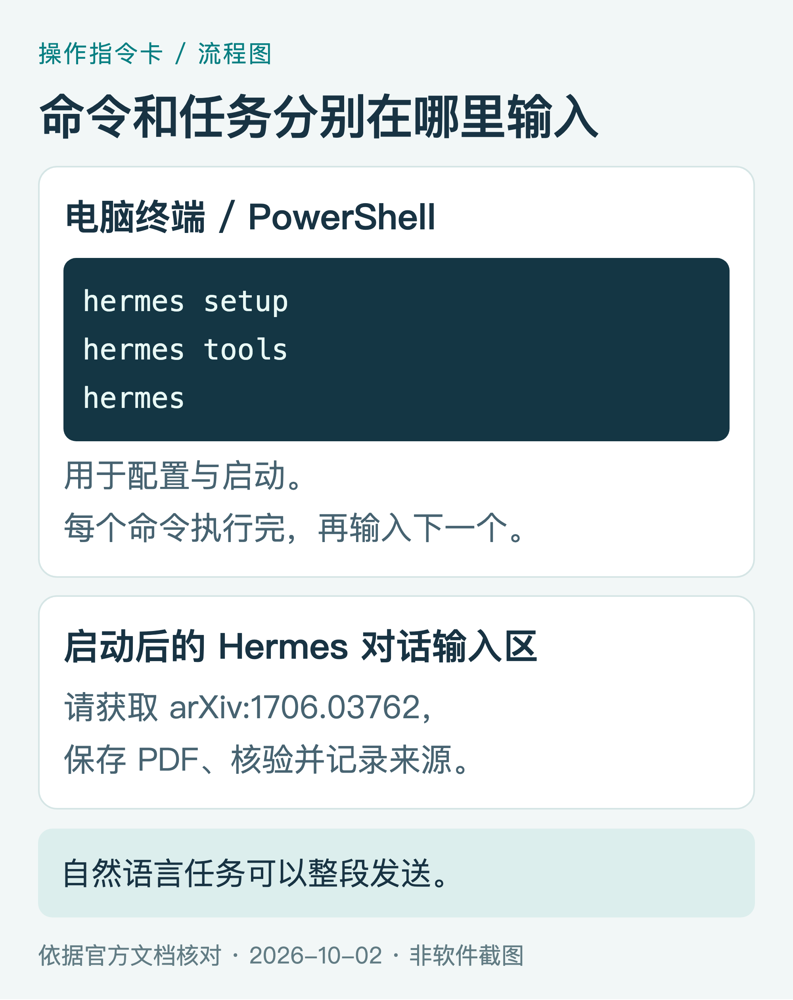
图1｜操作指令卡。安装与配置命令在电脑终端输入；文献任务在启动 Hermes 后输入。
在电脑终端输入的内容，通常像 hermes setup、hermes tools、hermes。macOS 可以通过系统搜索打开“终端”；Windows 打开 PowerShell 或 Windows Terminal 的 PowerShell 标签页。
发给 Hermes 的内容，通常是一段自然语言，例如“请下载这篇论文并保存清单”。先启动 Hermes，看到对话输入提示后再粘贴任务。
文章中的命令块没有附加 $、PS> 或 ❯，复制时直接使用块内文字。一个命令执行完再执行下一个；自然语言提示词则可以整段发送。终端里需要手动换行输入时，可参考官方说明使用 Alt+Enter 或 Ctrl+J。Hermes 多行输入说明
03 安装 Hermes 并确认命令可以运行
准备好三样东西：一台电脑、可用的网络、一个可以在 Hermes 中配置的模型服务。模型推理和部分网页服务可能收费，额度以你实际选择的服务为准。第一次只处理一篇论文，便于观察用量和排查问题。
如果喜欢安装包，可以从 Hermes 官方网站 进入桌面端下载页面，按系统选择。下面使用命令行路线，后面的步骤都按这条路线展开。
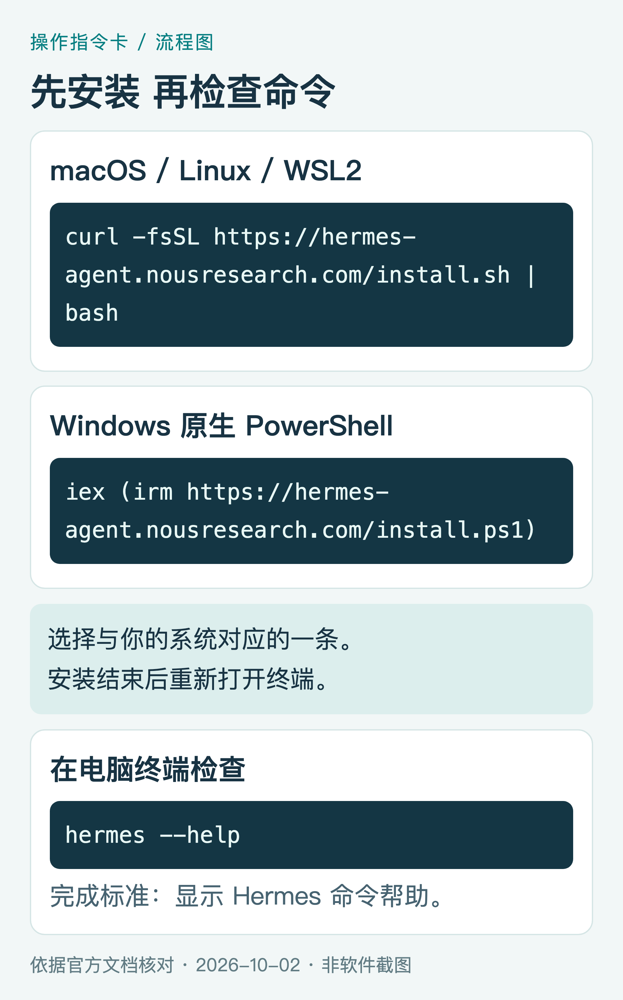
图2｜官方安装命令指令卡。两种系统选择其一；请从下面的正文复制完整命令。
macOS、Linux 或 WSL2，在电脑终端输入：
curl -fsSL https://hermes-agent.nousresearch.com/install.sh | bash
Windows 原生 PowerShell，在 PowerShell 输入：
iex (irm https://hermes-agent.nousresearch.com/install.ps1)
这两条是官方提供的在线安装脚本命令。安装过程中按提示完成；结束后关闭并重新打开终端，输入：
hermes --help
完成标准：终端能显示 Hermes 的命令帮助。 如果出现“command not found”或“不被识别”，先按官方安装指南检查安装结果和 PATH，重新打开终端后再试。官方安装指南
04 配好模型 工具和工作文件夹
第一步 配置一个能正常回答的模型
首次使用，在电脑终端输入：
hermes setup
按照向导选择模型服务并完成认证。如果已有配置、只想切换模型，使用 hermes model。已选择 Nous Portal 方案的读者，也可以按官方说明使用 hermes setup --portal；这是另一条配置路线，无须把这些命令全部重复运行。官方快速入门
认证时使用向导提供的流程。API Key 应在配置环节填写，不要粘贴到论文下载提示词里。
第二步 让文献任务需要的工具可用
在电脑终端输入：
hermes tools
为本文使用的 CLI 平台配置网页搜索、终端执行和文件操作。需要点击网页或处理动态页面时，再配置浏览器工具。
网页搜索配置中可找到 Web Search & Extract。搜索用于找入口，网页内容提取用于读取页面，实际保存 PDF 还需要终端或其他下载能力。某些服务只支持搜索；如果提取工具报告“search-only backend”，按配置向导或文档增加可提取网页内容的服务。当前文档提供多种服务和部分无密钥路线，免费路线仍可能受到限流；不要把“无需单独密钥”理解为无限使用。官方网页工具配置
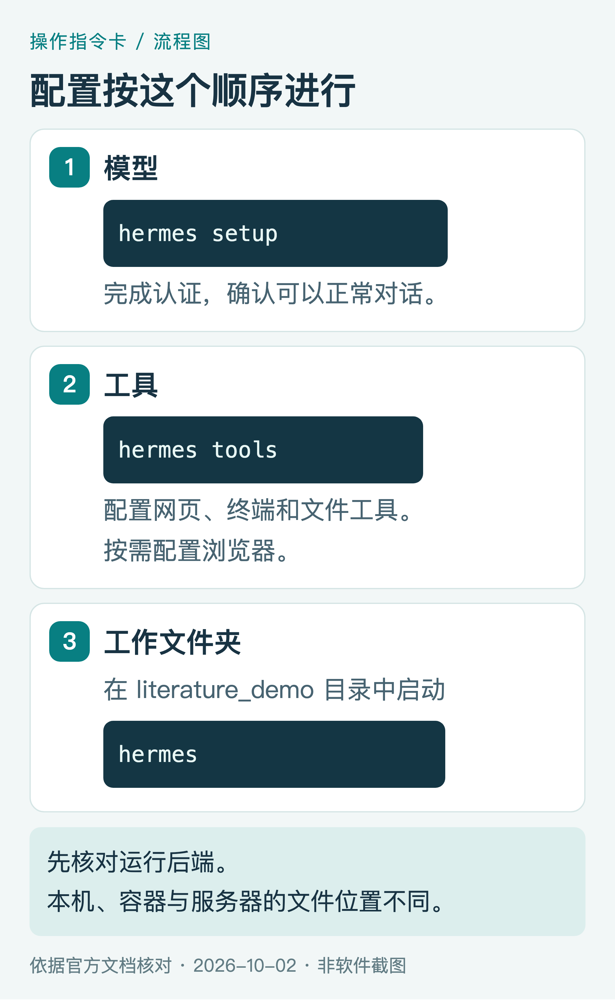
图3｜配置顺序图。每一步完成后做一次小检查，再进入文献下载。
第三步 在专用文件夹里启动 Hermes
本篇新手练习采用 local 终端后端，任务在本机执行。请在 hermes setup terminal 中确认后端；新建练习环境若要明确使用本机，可以在电脑终端运行：
hermes config set terminal.backend local
hermes config set terminal.cwd .
已经使用 Docker、SSH 或云端环境的读者，应根据自己的运行环境安排工作目录和文件取回方式。上面两条会修改后端和工作目录设置。local 后端以你的电脑账号权限执行操作，专用文件夹用于组织文件，并不是访问隔离。终端后端及工作目录说明
macOS、Linux 或 WSL2，在电脑终端依次输入：
mkdir -p ~/Documents/literature_demo
cd ~/Documents/literature_demo
hermes
Windows PowerShell，依次输入：
New-Item -ItemType Directory -Force -Path "$HOME\Documents\literature_demo"
Set-Location "$HOME\Documents\literature_demo"
hermes
完成标准：看到 Hermes 对话输入提示，并能正常交谈。 先发送“请仅回复：准备好了”，确认模型可以回答。接下来所有以“请……”开头的提示词，都发到这个对话输入区。
05 下载前做一次可验证的环境检查
不要只问 Hermes“你能不能下载论文”。让它执行一个小任务，才能看到联网和文件读写是否实际工作。
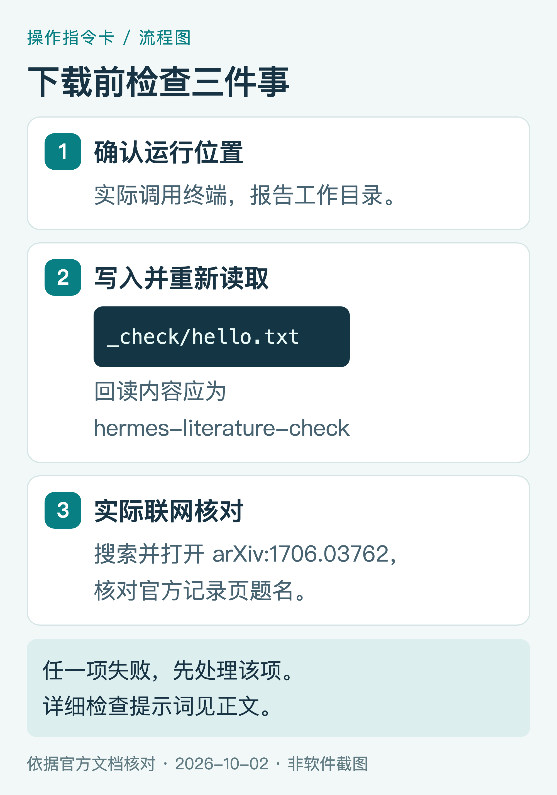
图4｜环境检查图。看实际工具结果、文件路径和回读内容。
复制给 Hermes：
请执行下载前检查，先不要下载论文。
- 实际调用终端工具，报告工作目录、操作系统和运行后端。请区分已确认的信息与无法确认的信息。
- 在当前工作目录创建 _check 文件夹，写入 hello.txt，内容为 hermes-literature-check，再读取该文件核对内容。只操作本次新建文件夹。
- 使用网页搜索查找 arXiv:1706.03762，返回你实际找到的官方记录页面，并打开页面核对题名；不要只凭记忆给出链接。
- 返回检查表，包括使用的工具、成功或失败、错误摘要、测试文件绝对路径。不要输出密钥。
- 任一环节失败，先说明原因，不要继续批量任务。
检查结果时，关注三个细节：文件确实创建了；回读内容与指定文字一致；联网返回的是实际可访问的记录页。在本机模式下，还应能在 literature_demo/_check/ 里找到 hello.txt。
如果模型只能回答文字，却没有工具执行记录，回到 hermes tools 检查当前平台启用的工具，并重新启动对话。能搜索但不能保存，通常需要进一步检查文件工具、目录权限或后端位置。
06 第一篇论文 从明确编号开始
首次练习使用 arXiv 上的 Attention Is All You Need，编号 1706.03762。这篇练习只用于验证获取流程，无须先理解论文内容。arXiv 官方记录页
先知道在哪里核对
打开记录页，核对题名和编号，再看全文区域中的 PDF 入口。arXiv 的编号可能带版本后缀；记录本次取得的具体版本，便于复查。
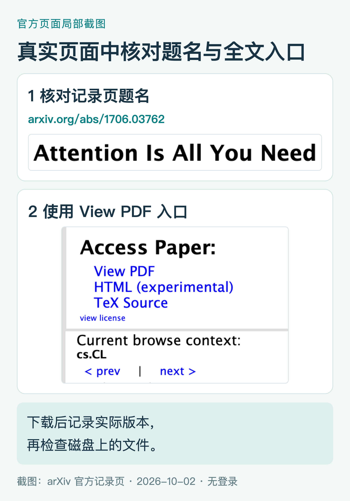
图5｜arXiv 官方页面的局部真实截图，截取日期为 2026 年 10 月 2 日。题名与全文入口分别放大展示；中文标签为阅读引导。页面布局可能随屏幕宽度变化。
再把下载和记录一起交给 Hermes
复制给 Hermes：
请获取 arXiv:1706.03762，题名应为 Attention Is All You Need。
- 从 arXiv 官方记录页核对题名、作者、年份和当前可下载版本，使用页面实际提供的 PDF 入口。
- 在当前工作目录创建 01_first_paper，将 PDF 实际保存到该文件夹。下载请求设置超时；每个来源最多重试两次。
- 核验文件类型、能否打开、页数和首页题名。文件扩展名为 .pdf 或网页请求成功，都不能单独作为成功依据。
- 创建 manifest.csv，字段为 title、year、doi、arxiv_id、source_url、version、file_path、status、checked_at、note。未核实字段留空并解释。
- 只有核验通过才将 status 写为 downloaded_verified；失败记录为 download_failed 或 verify_failed，并保留原因。
- 返回文件绝对路径、页数、来源、版本和状态。只操作本次新建文件夹，不覆盖已有文件。
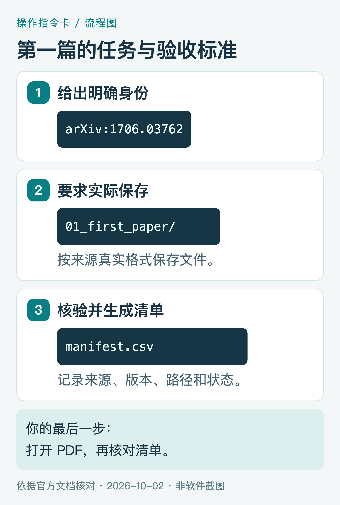
图6｜任务步骤图。清单字段和状态名称是本文约定，并非 Hermes 内置固定输出。
最后由你打开文件验收
在 literature_demo/01_first_paper/ 找到 PDF，双击打开，再打开 manifest.csv。确认文件能看、首页题名正确、清单有来源和对应路径。
此时可以给 Hermes 追加一句：“请列出本次生成的文件及大小，并报告 PDF 与 manifest.csv 是否对应。” 文件大小可以帮助发现异常，但没有一个通用大小阈值能证明 PDF 一定正确。
如果只得到论文链接，补充这句：“请把全文实际保存到文件夹并重新核验；若保存失败，返回失败原因和需要我处理的步骤。”
07 医学文献 用 PMID 找记录 再找全文
医学读者常从 PubMed 开始。PubMed 主要提供题录、摘要和全文链接，全文通常要到 PMC、期刊官网或其他提供方取得。PubMed 记录页本身不能当作论文全文 PDF。PubMed 全文获取说明
以 Aplastic Anemia 为练习：作者 Neal S. Young，2018 年发表，PMID 30354958，DOI 10.1056/NEJMra1413485，对应 PMCID PMC6467577。这些信息已经在公开题录中核对；本例仅演示获取路径。示例的 PubMed 记录
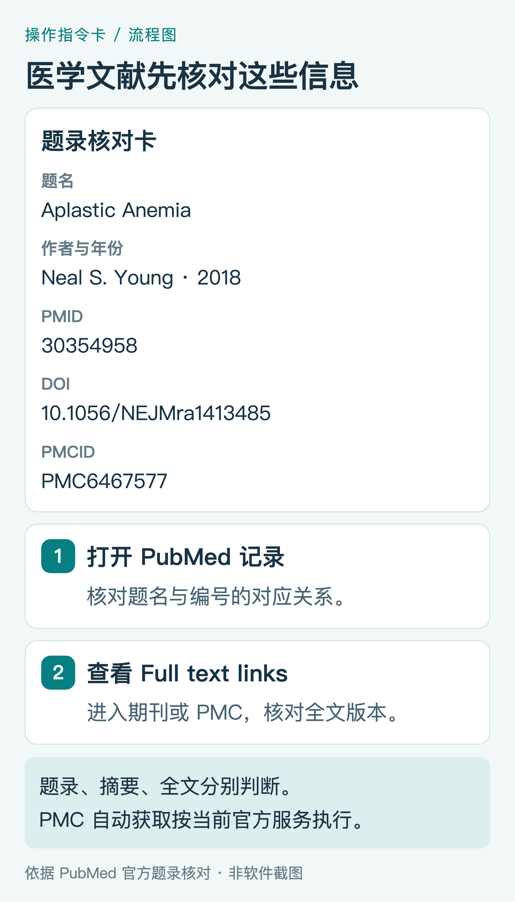
图7｜根据 PubMed 官方记录核对的题录指令卡，不是软件截图。看清 PMID、DOI、PMCID，再使用记录页的 Full text links 判断全文入口。
手动核对时这样做： 打开 PubMed，输入 PMID；在记录页核对题名与标识符；查看 Full text links。若有 PMC 入口，可进入全文页面核对稿件类型。期刊官网入口也可能需要机构订阅。
复制给 Hermes：
请处理 PMID:30354958，题名应为 Aplastic Anemia。
- 先在 PubMed 核对题名、作者、年份、DOI 和 PMCID，报告是否与输入对应。
- 查找能够合法获取的全文来源，优先核对期刊官网和公开仓储。标明取得的是发表版、作者接受稿还是其他版本。
- 如果从 PMC 自动获取内容，先读取当前 PMC 官方开发者和 Article Datasets 文档，使用允许的自动获取服务。不要把批量任务写成网页循环抓取，也不要沿用已停用的旧 OA Web Service。
- 在当前工作目录创建 02_medical_example。能取得 PDF 就保存并核验；只有 HTML、XML 或 TXT 全文时，保留真实格式并标记 fulltext_other。
- 将题录、来源、版本、路径、获取时间和状态写入 manifest.csv。不能取得全文时，标记 needs_access、not_found 或 download_failed，并给出下一步。
- 返回结果和文件路径；不得用摘要替代全文，不得将网页文件改名为 PDF。
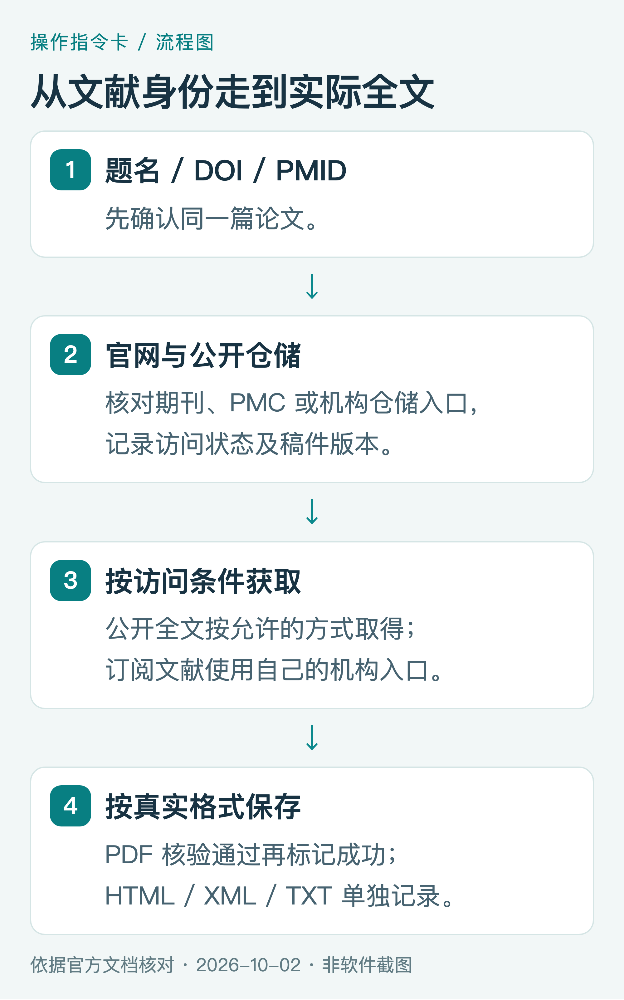
图8｜全文获取路径图。题录定位、访问权限和文件格式分别检查。
PMC 路线有一项时间变化需要记住。 2026 年 8 月，PMC 完成 Article Dataset 分发服务调整，旧版数据文件已移除。当前自动获取应参考官方开发者文档，使用 PMC Cloud Service、OAI-PMH、E-Utilities 或 BioC 等允许的服务。需要数据集中的 PDF 时，查看 Cloud Service 是否提供该文件；并非所有全文或作者手稿都有可获取的 PDF。PMC 数据集更新与格式说明、当前自动获取说明、Cloud Service 文件说明
如果已有 DOI，还可以将 Unpaywall 作为开放全文线索。它提供开放位置、PDF 链接、版本等字段；查到开放位置后，仍需实际打开和核验。url_for_pdf 可能为空，公开页面可读也不等于可以任意转发原文。Unpaywall 数据字段说明
需要医院或学校订阅时，通过机构提供的正式入口获取；把需要人工处理的项目留在清单中。这类情况的任务成果，是明确访问状态和下一步，而不是反复请求同一个登录页。
08 清单下载 先清洗 再小批量获取
第一篇跑通后，再尝试已有文献清单。最容易上手的输入是 UTF-8 编码的 CSV：第一行是字段名，每行一条记录，尽量提供 DOI 或 PMID。
下面是一份可以直接练习的三行清单。最后两行故意对应同一篇论文，用来观察 Hermes 是否能识别重复记录。
title,doi,pmid
Attention Is All You Need,10.48550/arXiv.1706.03762,
Aplastic Anemia,,30354958
Aplastic Anemia,10.1056/NEJMra1413485,
保存为 papers.csv，放在 literature_demo 文件夹。也可以从配套素材包取用。Excel 用户可以选择“CSV UTF-8”格式；准备自己的数据时，题名里有英文逗号应正确使用 CSV 引号，避免拆成多列。
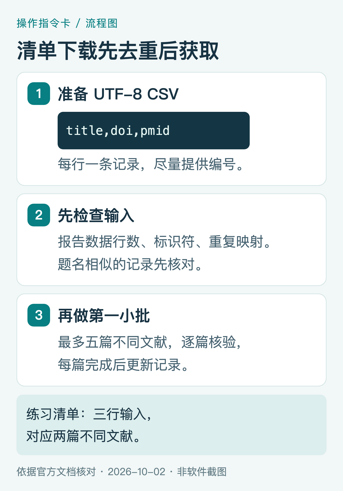
图9｜批量操作图。先核对输入与重复项，再下载；三行示例应定位到两篇不同文献。
先检查清单 不急着下载
复制给 Hermes：
请读取当前工作目录的 papers.csv，先不要下载。
检查字段、数据行数和空值；将 DOI 去除网址前缀与首尾空格，并以规范化 DOI、PMID 及题录对应关系识别重复。只有题名相似但身份未确认的项目，标记待核对，不能直接合并。
输出 input_checked.csv，保留每个原始行号和处理结果；另列需要下载的不同文献。所有字段值都应来自输入或实际核对，不要补造标识符。
返回原始行数、重复关系、唯一文献数量和需要人工确认的项目。
练习清单应报告三条输入、两篇不同文献，并说明两条 Aplastic Anemia 记录为什么对应同一篇论文。如果没有识别出来，先要求它核对 PMID 与 DOI 的关系，再进行获取。
再处理第一小批
复制给 Hermes：
请按刚核对的清单获取全文，先处理最多五篇不同文献。
- 逐篇确认身份、查找来源、下载并核验，串行执行；遇到限流按服务要求等待，每个来源最多重试两次。PMC 内容使用当前官方允许的自动获取服务。
- 在当前工作目录创建 03_batch/pdf、03_batch/fulltext_other 和 03_batch/metadata。PDF 与其他全文分别保存，避免覆盖已有文件。
- 将清单写入 03_batch/metadata/manifest.csv，至少记录原始行号、题名、DOI、PMID、来源、版本、路径、状态、原因和时间。每处理完一篇即更新。
- 保存处理说明到 README.txt；失败项目也必须保留，不要只汇报成功项。
- 返回输入行数、去重后数量、各状态数量和清单路径。本次最多处理五篇，不要扩展到其他文献。
先看这批的文件和记录。确认没有误配、重复覆盖或版本混乱后，再把数量提高。将任务拆成多个小批次，也更方便观察模型用量和网页服务限流。
09 只有研究主题时 先得到可核对的候选清单
“帮我下载所有再生障碍性贫血的论文”范围太大。更容易执行的做法是先给出研究对象、主题、年份和数量，再让 Hermes 提出检索式。
下面是一个医学检索练习。它用于训练检索与记录流程，不代表完整的系统综述检索策略。
复制给 Hermes：
我想查找获得性再生障碍性贫血与造血干细胞移植的文献，时间范围为 2021-01-01 至 2026-10-02。
先不要下载，请提出 PubMed 检索式，解释关键词、字段和日期范围，并说明如何区分获得性疾病与遗传性骨髓衰竭。
检索后先给我十篇候选文献，逐条记录题名、作者、年份、研究类型、DOI、PMID、题录链接、全文状态和初步入选原因。报告实际执行的检索式、检索日期、排序方式和结果范围，不要声称十篇就覆盖全部证据。
从题录或摘要可以确认的内容，与需要阅读全文才能确认的内容分开标注。不得推断缺失信息。
你核对候选清单并选定文献后，再发送：“请仅获取我选中的文献，沿用前文的保存、核验和状态记录要求。”
这一步让人保留对研究范围和纳入标准的判断。下载齐了几份文件，并不意味着已经完成文献质量评价或临床证据分析。
10 下载后 用四项检查确认全文可用
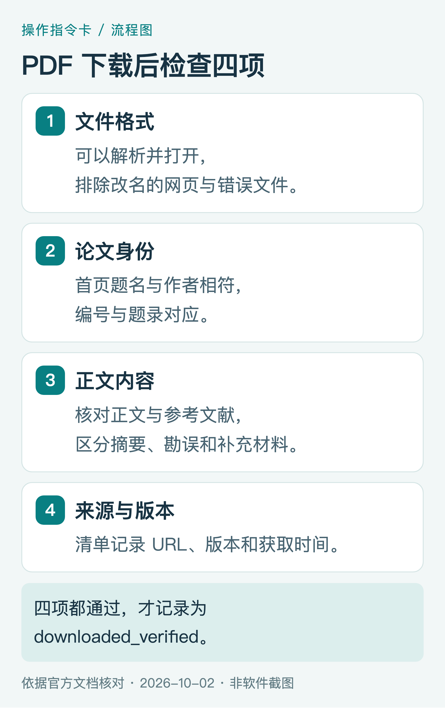
图10｜核验清单。文件格式、文献身份、正文完整性和版本都应检查。
第一项，文件能不能打开。 让工具解析 PDF，同时由你打开确认。HTML 登录页、错误页即使被命名为 .pdf，仍然不是 PDF。反过来，一个能解析的 PDF 也可能是下载提示页，仍要继续看内容。
第二项，是不是同一篇论文。 将首页题名、作者与清单比较，并在可见处核对 DOI 或其他标识符。题名大小写和排版差异不一定是错误，但研究主题相似不能证明身份相同。
第三项，是否为目标全文。 核对正文和参考文献是否存在；把正文、补充材料、勘误和摘要分开。记录页数有助于复查，但不能只凭页数判断完整性。
第四项，版本和来源是否说得清。 作者接受稿、预印本和发表版可以有不同排版甚至内容。清单注明版本、来源 URL 和获取时间；无法确认版本时就写“待核对”。
状态建议统一成下面几类。它们是本教程的记录约定，便于筛选和续做：
| 状态 | 何时使用 |
|---|---|
| downloaded_verified | PDF 已保存并通过核验 |
| fulltext_other | 已取得 HTML、XML、TXT 等其他格式全文 |
| needs_access | 需要机构订阅、登录或人工获取 |
| not_found | 本次查找没有找到合适的全文入口 |
| download_failed | 已尝试获取，但文件保存失败 |
| verify_failed | 文件取得了，但格式、身份或内容检查未通过 |
重复项在 input_checked.csv 中保留映射，不再重复计为待下载文献。汇报时，输入记录数、唯一文献数、已处理数和未处理数分别说明；“本次没找到”也不能扩大为“这篇论文没有全文”。
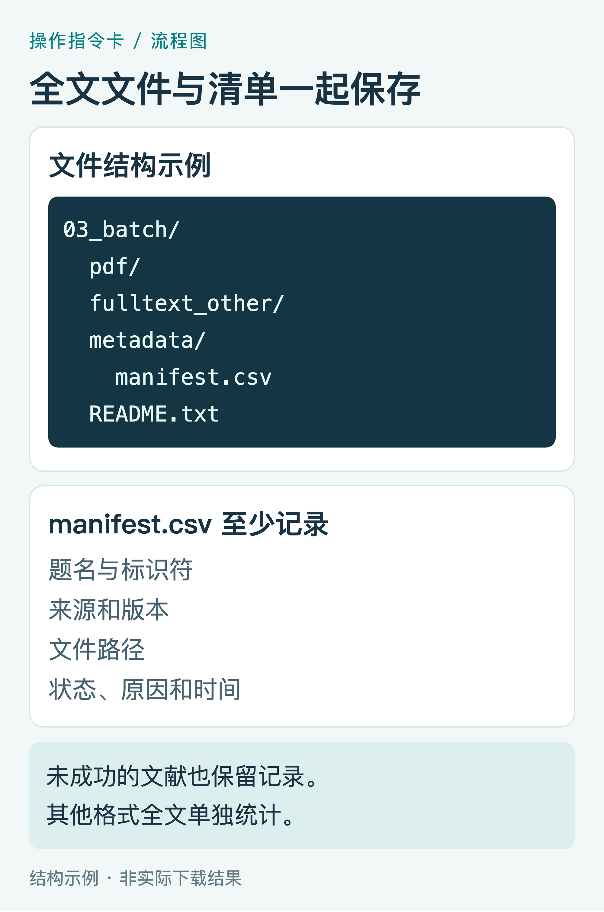
图11｜本文建议的文件结构示例，非实际下载结果。文件路径应以你的运行环境为准。
让 Hermes 做一次收尾核对：
请检查本次输出文件夹，逐条核对 manifest.csv 与实际文件。
找出有记录却缺文件、有文件却无记录、重复文件和 verify_failed 项目；不要删除或覆盖文件。
生成检查报告，并分别统计已处理和未处理文献。仅 downloaded_verified 计入核验通过的 PDF；fulltext_other 单独统计。
列出需要我人工打开、取得权限或确认版本的项目。
11 卡住了 按失败位置继续处理
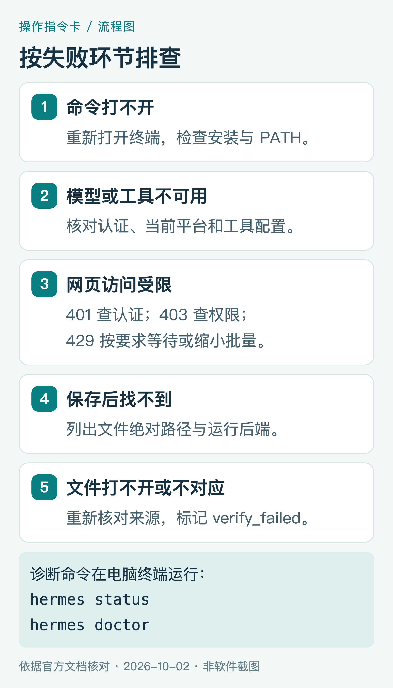
图12｜排错指令卡。找到失败环节后，处理对应问题，再继续未完成项。
Hermes 命令无法运行。 回到安装步骤，重开终端后执行 hermes --help。如果依旧失败，查看官方安装指南中的 PATH 和安装位置说明。
模型能回答，但任务没执行。 检查当前 CLI 平台的工具是否启用，用环境检查提示词验证实际调用。安装成功和模型能聊天，是两项不同的检查。
搜索有结果，提取失败。 查看网页服务是否只支持搜索，回到 hermes tools 配置提取能力。需要点击页面的任务，再配置浏览器。抓到的网页文字与磁盘上的 PDF，分别验收。
返回 401、403 或 429。 401 通常需要检查认证；403 需要核对访问权限、来源和服务配置；429 表示请求受到限流，按服务提示等待或缩小批量。不要重复无间隔请求。
说已保存，但电脑里找不到。 要求它通过终端重新列出文件，返回绝对路径和运行后端。本机、容器、远程服务器中的同名路径可能是不同位置；远程运行需要按环境取回文件。
PDF 打不开或内容不对。 将状态改为 verify_failed，重新核对题录与真实下载入口。不要用重新命名扩展名的方式“修复”。
需要检查 Hermes 配置状态时，可以退出对话，或另开一个电脑终端，运行以下诊断命令。先读报告，再处理具体问题。CLI 诊断命令说明
hermes status
hermes doctor
任务中断后，可以用 hermes --continue 恢复最近会话。恢复对话只会恢复已有会话上下文；接着依据磁盘清单续做，才容易避免重复下载。会话恢复说明
复制给 Hermes：
请读取现有 manifest.csv 和实际文件。先核验 downloaded_verified 项目是否仍存在，不重复下载。
列出待处理项目，只继续我指定的 download_failed 和 not_found 项目。verify_failed 项目先排查原因；needs_access 项目列为人工待办。
保留原记录和既有文件，追加本次尝试时间、来源与结果，并更新状态。
12 今天就从一篇论文开始
如果你第一次使用 Hermes，按这条顺序就可以开始：安装并打开命令帮助；完成模型、工具和文件测试；获取 arXiv:1706.03762；自己打开 PDF；核对清单，再做三行 CSV 的去重练习。
等这一轮稳定完成，再把自己的课题文献带进去。持续保留来源、版本和失败原因，后续补全文、整理引用和重新核查都会更方便。
核验说明：命令与功能依据官方文档核对；图5使用匿名访问 arXiv 公开页面取得的真实局部截图，其余操作图为指令卡或流程图。本文没有将提示词模板表述为已运行的 Hermes 下载实测，执行结果需在读者环境中验收。
全文获取和后续分享按来源的访问权限与使用条款处理。公众号文章可以分享获取方法和题录链接，转发论文原文前还应核对该文件的许可。